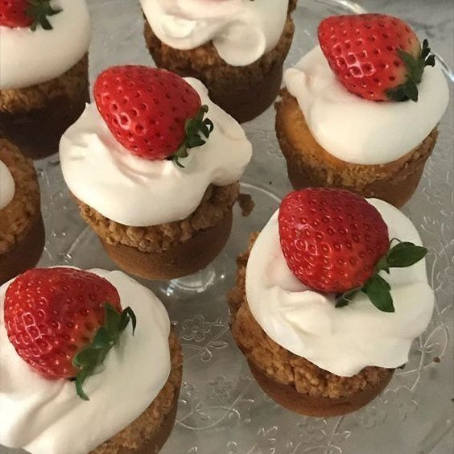

STRAWBERRY MUFFINS

INGREDIENTS
¾ cup + 2 tablespoons all-purpose flour, spooned and leveled
¾ cup whole wheat flour, spooned and leveled
½ cup + 2 tablespoons almond flour, spooned and leveled
1 tablespoon aluminum-free baking powder
½ teaspoon cinnamon
½ teaspoon sea salt
1 cup unsweetened almond milk
¼ cup extra-virgin olive oil
2 large eggs
½ cup cane sugar
1 teaspoon vanilla extract
1¼ cups diced strawberries
½ teaspoon flour to dust the strawberries
INSTRUCTIONS
-
Preheat the oven to 400°F and grease a 12-cup muffin tin.
-
In a medium bowl, combine the flours, baking powder, cinnamon, and salt.
-
In a large bowl, vigorously whisk together the almond milk, olive oil, eggs, sugar, and vanilla.
-
Dust the strawberries with the ½ teaspoon of flour and toss to lightly coat them. This will prevent them from sinking to the bottom of the muffin cups.
-
Pour the dry ingredients into the bowl of wet ingredients and stir to combine. Gently fold in the strawberries. Use a ⅓ cup measuring cup to scoop the batter into the muffin cups. Bake for 17 minutes, or until the muffin tops spring back to the touch. Let cool for 10 minutes, and then transfer to a wire rack to cool completely.